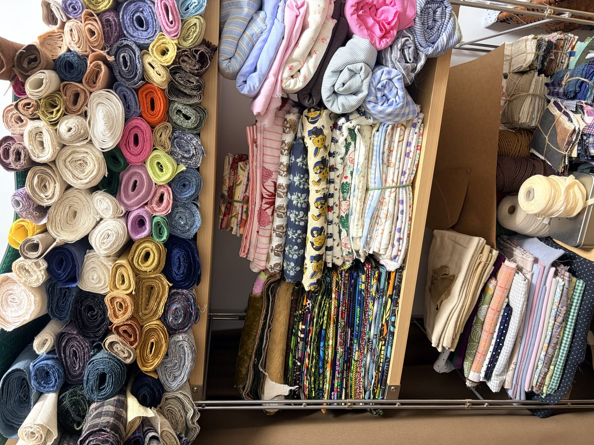
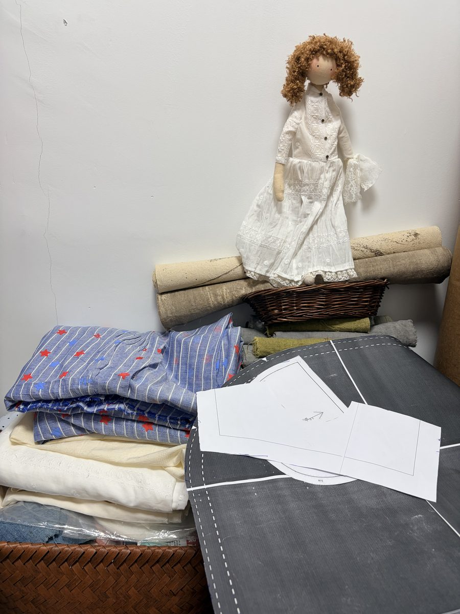
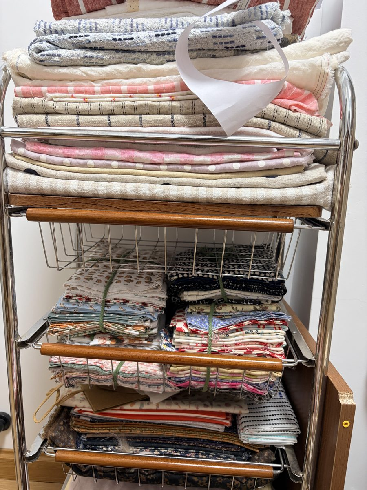
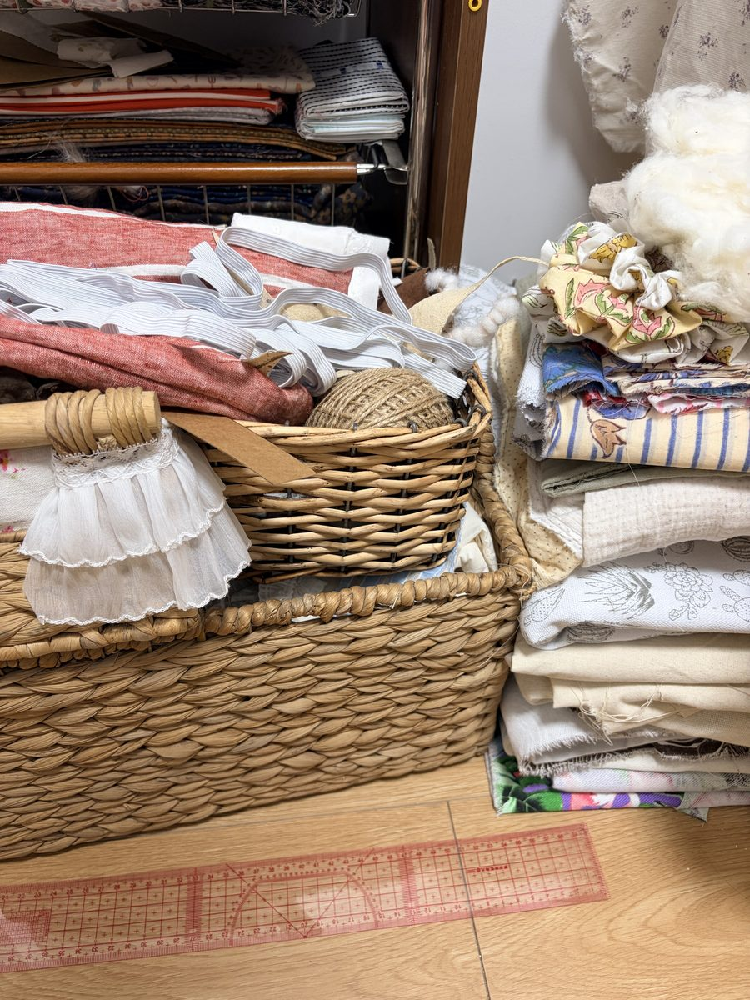
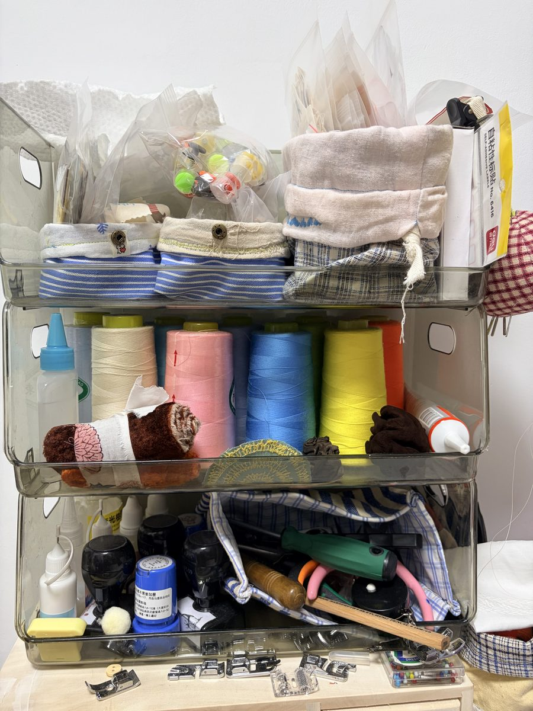
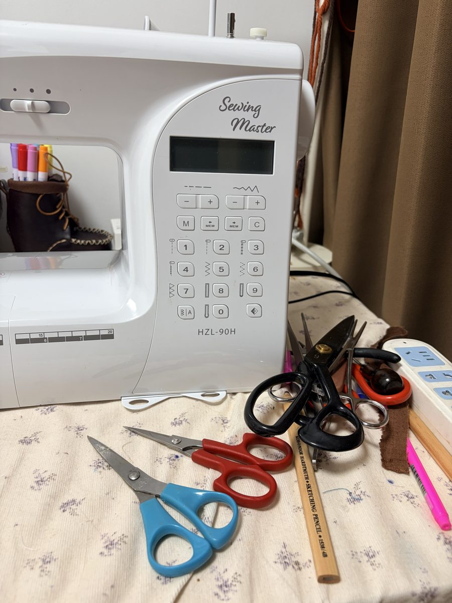
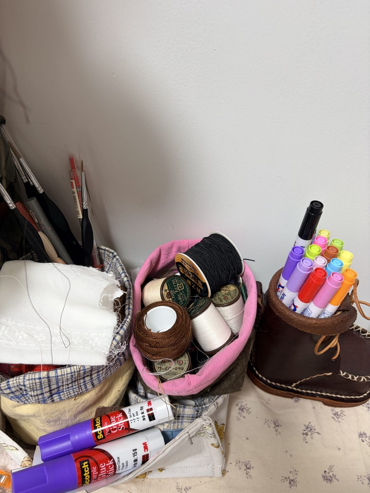
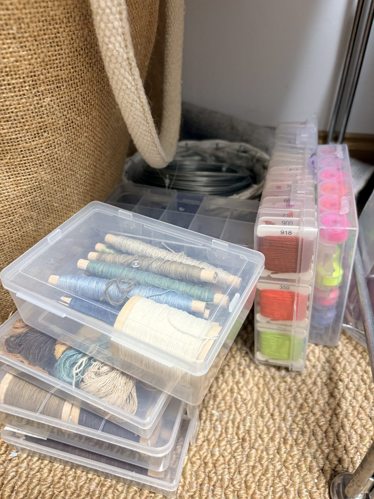

诞生地
他们诞生的地方

线下淘的与自己染的布料
这些布料全是我一点点攒起来的。有的是在线下布料市场淘到的老粗麻，有的是去上海娃娃展时特地买的进口花布，还有不少是自己在家里煮水用草木染出来的布匹。每一卷摸上去厚度、手感都不同，做不同的娃娃和包包就挑适合的布。

多张 A4 纸拼出来的图纸
做娃娃衣服本来需要 A3 大小的图纸，家里只有普通的 A4 打印机，我就把图纸分块打在多张 A4 纸上，一张张剪好再用胶水拼成一张完整的 A3 图纸。坐在桌子前反复对比例、剪版型，娃娃身上的领口和裙摆褶皱就是这么折腾出来的。

日式蓝染与淘宝淘来的水洗布
这个收纳推车上放的都是平时最常用的面料。一层层叠好的日式传统蓝染提花布、淘宝上精挑细选买来的水洗波点棉麻、还有带毛边的复古粗布。做手作最享受的就是在这一堆布里挑颜色、搭手感的时刻。

手编藤篮里的蕾丝与布头
随手编的藤篮直接放在地上，里面全是我平时舍不得扔的宝贝碎布和蕾丝花边。有做娃娃袖口用的捏褶小蕾丝、古董白纱边缘、还有打样剩下的红白格子布。做小配件或者给娃娃打扮时，随手在篮子里翻翻就能找到惊喜。

透明盒里的彩线与工具
这几个透明收纳盒就摆在手边。上面一层放着各种颜色的高强车缝线，给什么颜色的布走线就挑对应的线；底下放着按扣、钻孔的原木锥子、拆线器和缝纫机压脚。东西虽然杂，但顺手一拿就是它们，做手工最离不开这一架子。

JUKI 缝纫机与很多把剪刀
这台 JUKI 缝纫机是家里做活的大功臣，车薄纱和厚粗麻都很利索。桌上放了好几把剪刀，分工其实各不相同：黑色大钢剪专门裁布，中号红柄剪用来剪纸样，蓝色小剪刀是随手剪线头的纱剪，边上还有画线铅笔和划粉，每天坐在这儿的时间最长。

线下淘来的皮靴笔筒与特种细线
桌角这个皮料小靴子不是自己做的，是我在线下逛街时淘回来的小物件，拿来当笔筒刚刚好，里面插着给娃娃画五官、画腮红的细彩笔。旁边是日本买的 Fujix Quilter 手缝细线和胶棒，给娃娃做隐形走线全靠它，特别顺滑不打结。

刺绣线盒与买来的手染棉线
几个格子里按色号码得整整齐齐的刺绣线，大部分是低饱和的植物色系。边上原木线轴缠着的是买好的手染棉线，染出来的色泽柔和自然。给娃娃绣小睫毛、绣裙角的小花边时，就挑合适颜色的线慢慢绣。看着整整齐齐的颜色，心情就会特别踏实。